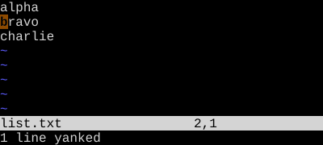

Yank and Put
Yank is copy. Put is paste. The register knows whether it's a line or a span.
y is the yank (copy) operator. p puts after the cursor; P puts before. The register remembers whether it holds characters or whole lines, and that decides where the put lands.
y is yank — Vim's word for copy. It's an operator, like d and c, so it takes a motion: yw yanks a word, y$ yanks to end of line, yy yanks the whole line.
Whatever you yanked sits in the unnamed register, ready to be put with p (after the cursor) or P (before).
| Key | Note |
|---|---|
| y | |
| y |
| Key | Note |
|---|---|
| Y |
| Key | Note |
|---|---|
| y | |
| w |
| Key | Note |
|---|---|
| y | |
| $ |
| Key | Note |
|---|---|
| p |
| Key | Note |
|---|---|
| P |
Reference
| Key | Action | Type |
|---|---|---|
| y{motion} | Yank range | Inherits from motion |
| yy | Yank current line | Linewise |
| Y | Yank line (vi) or to end-of-line (nvim default) |
Linewise / charwise |
| p | Put after cursor / below line | — |
| P | Put before cursor / above line | — |
| gp | Like p but leave cursor after pasted text | — |
| ]p | Put + adjust indent to context | — |
| "{r}p | Put from register {r} | — |
Worked example — yy then p
Copy a line, paste below.


Buffer unchanged. The unnamed register now holds 'bravo\n'.

Linewise paste opens a new line beneath. P pastes above.
See also: Delete, The Unnamed Register, Named Registers, The Universal Grammar